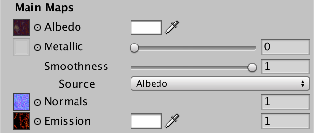
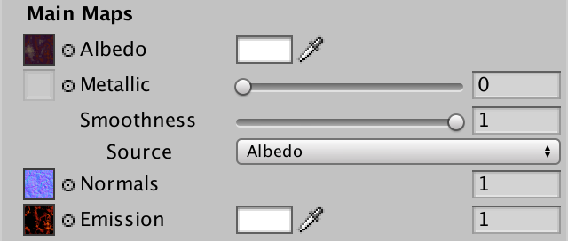

Rendering 9
Complex Materials
- Create a custom shader GUI.
- Mix metals and nonmetals.
- Use nonuniform smoothness.
- Support emissive surfaces.
This is the ninth part of a tutorial series about rendering. Last time, we added support for environmental maps. In this part we'll combine multiple textures to create complex materials. But before we get to that, we need a better GUI for our shader.
This tutorial was made with Unity 5.4.1f1.
User Interface
Up to this points, we've been using Unity's default material inspector for our material. It is serviceable, but Unity's standard shader has quite a different look. Let's create a custom inspector for our own shader, mimicking the standard shader.
ShaderGUI
We can create a custom inspector by adding a class that extends UnityEditor.ShaderGUI. As it is an editor class, place its script file in an Editor folder.
using UnityEngine;
using UnityEditor;
public class MyLightingShaderGUI : ShaderGUI {
}
To use a custom GUI, you have to add the CustomEditor directive to a shader, followed by a string containing the name of the GUI class to use.
Shader "Custom/My First Lighting Shader" {
…
CustomEditor "MyLightingShaderGUI"
}
To replace the default inspector, we have to override the ShaderGUI.OnGUI method. This method has two parameters. First, a reference to a MaterialEditor. This object manages the inspector of the currently selected material. Second, an array containing that material's properties.
public class MyLightingShaderGUI : ShaderGUI {
public override void OnGUI (
MaterialEditor editor, MaterialProperty[] properties
) {
}
}
Inside this method, we can create our own GUI. As we're not doing so yet, the inspector has become empty.
Creating a Label
The standard shader GUI is split into two sections, one for the main maps, and another for the secondary maps. We'll use the same layout in our GUI. To keep the code clean, we'll use separate methods for distinct parts of the GUI. We start with the main section and its label.
public override void OnGUI (
MaterialEditor editor, MaterialProperty[] properties
) {
DoMain();
}
void DoMain() {
GUILayout.Label("Main Maps");
}
The standard shader has a bold label, so we want a bold label as well. This is done by adding a GUI style to the label, in this case EditorStyles.boldLabel.
GUILayout.Label("Main Maps", EditorStyles.boldLabel);
Showing Albedo
To show the properties of our material, we have to access them in our methods. We could pass the parameters of OnGUI on to all other methods, but this would lead to a lot of repeated code. Instead, let's put them in fields.
MaterialEditor editor;
MaterialProperty[] properties;
public override void OnGUI (
MaterialEditor editor, MaterialProperty[] properties
) {
this.editor = editor;
this.properties = properties;
DoMain();
}
The albedo map is shown first in the standard shader. This is the main texture. Its property sits somewhere inside the properties array. Its array index depends on the order in which the properties are defined in our shader. But it is more robust to search for it by name. ShaderGUI contains the FindProperty method, which does exactly that, given a name and a property array.
void DoMain () {
GUILayout.Label("Main Maps", EditorStyles.boldLabel);
MaterialProperty mainTex = FindProperty("_MainTex", properties);
}
Besides the texture property, we also need to define the contents of a label. This is done with GUIContent, which is a simple container class.
MaterialProperty mainTex = FindProperty("_MainTex", properties);
GUIContent albedoLabel = new GUIContent("Albedo");
But we've already named the main texture Albedo in our shader. We can just use that name, which we can access via the property.
GUIContent albedoLabel = new GUIContent(mainTex.displayName);
To create one of those small texture widgets, we have to rely on the editor that we've been given a reference to. It has a collection of methods to draw such widgets.
MaterialProperty mainTex = FindProperty("_MainTex", properties);
GUIContent albedoLabel = new GUIContent(mainTex.displayName);
editor.TexturePropertySingleLine(albedoLabel, mainTex);
This is beginning to look like the standard shader! But that inspector also has tooltips, when you hover over the property labels. In the case of the albedo map, it says Albedo (RGB) and Transparency (A).
We can add a tooltip as well, by simply adding it to the label content. As we don't support transparency yet, let's just use Albedo (RGB).
GUIContent albedoLabel = new GUIContent(mainTex.displayName, "Albedo (RGB)");
The TexturePropertySingleLine method has variants that work with more than one property, up to three. The first should be a texture, but the others can be something else. They will all be put on the same line. We can use this to display the tint next to the texture.
MaterialProperty tint = FindProperty("_Tint", properties);
editor.TexturePropertySingleLine(albedoLabel, mainTex, tint);
Let's skip ahead to the bottom of the main section. That's where the tiling and offset values of the main texture are shown. This is done with the MaterialEditor.TextureScaleOffsetProperty method.
editor.TexturePropertySingleLine(albedoLabel, mainTex, tint); editor.TextureScaleOffsetProperty(mainTex);
Convenience Methods
Instead of using the existing FindProperty method, let's create one that only requires a name parameter, taking advantage of our properties field. This will make our code more legible.
MaterialProperty FindProperty (string name) {
return FindProperty(name, properties);
}
Switch to using this method in DoMain. Also, we can directly pass the tint property to the TexturePropertySingleLine method. We're not using it anywhere else.
void DoMain () {
GUILayout.Label("Main Maps", EditorStyles.boldLabel);
MaterialProperty mainTex = FindProperty("_MainTex");
// MaterialProperty tint = FindProperty("_Tint", properties);
GUIContent albedoLabel =
new GUIContent(mainTex.displayName, "Albedo (RGB)");
editor.TexturePropertySingleLine(
albedoLabel, mainTex, FindProperty("_Tint")
);
editor.TextureScaleOffsetProperty(mainTex);
}
Let's also create a method to configure the contents of a label. We only need to use a single static GUIContent instance for this. We'll just replace its text and its tooltip. As we might not need a tooltip all the time, let's make it optional, with a default parameter value.
static GUIContent staticLabel = new GUIContent();
static GUIContent MakeLabel (string text, string tooltip = null) {
staticLabel.text = text;
staticLabel.tooltip = tooltip;
return staticLabel;
}
It's even more convenient if we don't have to bother with extracting the display name from properties all the time. So create a MakeLabel variant that does this as well.
static GUIContent MakeLabel (
MaterialProperty property, string tooltip = null
) {
staticLabel.text = property.displayName;
staticLabel.tooltip = tooltip;
return staticLabel;
}
Now DoMain can become even smaller. The same goes for all our future methods.
void DoMain () {
GUILayout.Label("Main Maps", EditorStyles.boldLabel);
MaterialProperty mainTex = FindProperty("_MainTex");
// GUIContent albedoLabel =
// new GUIContent(mainTex.displayName, "Albedo (RGB)");
editor.TexturePropertySingleLine(
MakeLabel(mainTex, "Albedo (RGB)"), mainTex, FindProperty("_Tint")
);
editor.TextureScaleOffsetProperty(mainTex);
}
Showing Normals
The next texture to be displayed is the normal map. Instead of putting all the code in DoMain, delegate it to a separate DoNormals method. Invoke it after the albedo line, before the tiling and offset.
DoNormals(); editor.TextureScaleOffsetProperty(mainTex);
The new DoNormals method simply retrieves the map property and displays it. The standard shader doesn't provide any extra tooltip info, so we won't either.
void DoNormals () {
MaterialProperty map = FindProperty("_NormalMap");
editor.TexturePropertySingleLine(MakeLabel(map), map);
}
Of course there is a bump scale as well, so add it to the line.
editor.TexturePropertySingleLine(
MakeLabel(map), map, FindProperty("_BumpScale")
);
The standard shader only shows the bump scale when there is a normal map assigned to the material. We can do this too, by checking whether the property references a texture. If it does, show the bump scale. If not, just use null as an argument for TexturePropertySingleLine.
editor.TexturePropertySingleLine(
MakeLabel(map), map,
map.textureValue ? FindProperty("_BumpScale") : null
);
Showing Metallic and Smoothness
The metallic and smoothness properties are simple float ranges. At least, for now. We can show them via the general-purpose MaterialEditor.ShaderProperty method. Unlike the texture methods, this method has the property as its first argument. The label contents come second.
void DoMain () {
…
editor.TexturePropertySingleLine(
MakeLabel(mainTex, "Albedo (RGB)"), mainTex, FindProperty("_Tint")
);
DoMetallic();
DoSmoothness();
DoNormals();
editor.TextureScaleOffsetProperty(mainTex);
}
…
void DoMetallic () {
MaterialProperty slider = FindProperty("_Metallic");
editor.ShaderProperty(slider, MakeLabel(slider));
}
void DoSmoothness () {
MaterialProperty slider = FindProperty("_Smoothness");
editor.ShaderProperty(slider, MakeLabel(slider));
}
We can make these properties line up with the other labels, by increasing the indent level of the editor. In this case, by two steps.
The indent level can be adjusted via the static EditorGUI.indentLevel property. Make sure to reset it to its old value afterwards.
void DoMetallic () {
MaterialProperty slider = FindProperty("_Metallic");
EditorGUI.indentLevel += 2;
editor.ShaderProperty(slider, MakeLabel(slider));
EditorGUI.indentLevel -= 2;
}
void DoSmoothness () {
MaterialProperty slider = FindProperty("_Smoothness");
EditorGUI.indentLevel += 2;
editor.ShaderProperty(slider, MakeLabel(slider));
EditorGUI.indentLevel -= 2;
}
Showing the Secondary Maps
The secondary maps work just like the main maps. So create a DoSecondary method which takes care of the bold label, the detail texture, and its tiling and offset.
public override void OnGUI (
MaterialEditor editor, MaterialProperty[] properties
) {
this.editor = editor;
this.properties = properties;
DoMain();
DoSecondary();
}
…
void DoSecondary () {
GUILayout.Label("Secondary Maps", EditorStyles.boldLabel);
MaterialProperty detailTex = FindProperty("_DetailTex");
editor.TexturePropertySingleLine(
MakeLabel(detailTex, "Albedo (RGB) multiplied by 2"), detailTex
);
editor.TextureScaleOffsetProperty(detailTex);
}
Adjust the display name of the detail texture in our shader, to match the standard shader.
_DetailTex ("Detail Albedo", 2D) = "gray" {}
The detail normal map works just like the main normal map. Curiously, the standard shader GUI doesn't hide the detail bump scale. But we're consistent, so we do hide it when there's no detail normal map.
void DoSecondary () {
…
DoSecondaryNormals();
editor.TextureScaleOffsetProperty(detailTex);
}
void DoSecondaryNormals () {
MaterialProperty map = FindProperty("_DetailNormalMap");
editor.TexturePropertySingleLine(
MakeLabel(map), map,
map.textureValue ? FindProperty("_DetailBumpScale") : null
);
}
Mixing Metal and Nonmetal
Because our shader uses a uniform value to determine how metallic something is, it cannot vary across a material's surface. This prevents us from creating complex materials that actually represent a mix of different materials. For example, here are the albedo and normal maps for an artistic impression of computer circuitry.
The green parts form the base of the circuit board, while the blue parts represent lights. These are nonmetallic. The yellow gold parts represent conductive circuitry, which should be metallic. On top of that are some brown stains, for variety.
Create a new material with these maps, using our lighting shader. Make it fairly smooth. Also, because the material isn't bright, it works with Unity's default ambient environment. So set the scene's Ambient Intensity back to 1, if you still had it lowered to zero.
Using the Metallic slider, we can make the whole surface either nonmetallic, metallic, or something in between. This is not sufficient for the circuitry.
Metallic Maps
The standard shader has support for metallic maps. These maps define the metallic value per texel, instead of for the whole material at once. Here is a grayscale map which marks the circuitry as metallic, and the rest as nonmetallic. Stained metal is darker, because of the semitransparent dirty layer on top.
Add a property for such a map to our shader.
Properties {
_Tint ("Tint", Color) = (1, 1, 1, 1)
_MainTex ("Albedo", 2D) = "white" {}
[NoScaleOffset] _NormalMap ("Normals", 2D) = "bump" {}
_BumpScale ("Bump Scale", Float) = 1
[NoScaleOffset] _MetallicMap ("Metallic", 2D) = "white" {}
[Gamma] _Metallic ("Metallic", Range(0, 1)) = 0
_Smoothness ("Smoothness", Range(0, 1)) = 0.1
_DetailTex ("Detail Albedo", 2D) = "gray" {}
[NoScaleOffset] _DetailNormalMap ("Detail Normals", 2D) = "bump" {}
_DetailBumpScale ("Detail Bump Scale", Float) = 1
}
Add the corresponding variable to our include file as well.
sampler2D _MetallicMap; float _Metallic;
Let's create a function to retrieve the metallic value of a fragment, with the interpolators as a parameter. It simply samples the metallic map and multiplies it with the uniform metallic value. Unity uses the R channel of the map, so we use that channel as well.
struct Interpolators {
…
};
float GetMetallic (Interpolators i) {
return tex2D(_MetallicMap, i.uv.xy).r * _Metallic;
}
Now we can retrieve the metallic value in MyFragmentProgram.
float4 MyFragmentProgram (Interpolators i) : SV_TARGET {
…
albedo = DiffuseAndSpecularFromMetallic(
albedo, GetMetallic(i), specularTint, oneMinusReflectivity
);
…
}
Note that the code of MyFragmentProgram doesn't care how the metallic value is obtained. If you want to determine the metallic value a different way, you only have to change GetMetallic.
Custom GUI
Had we still used the default shader GUI, the metallic map would've appeared in the inspector. But now we have to explicitly add it to MyLightingShaderGUI, by adjusting DoMetallic. Like the standard shader, we show the map and the slider on a single line.
void DoMetallic () {
MaterialProperty map = FindProperty("_MetallicMap");
editor.TexturePropertySingleLine(
MakeLabel(map, "Metallic (R)"), map,
FindProperty("_Metallic")
);
}
Map or Slider
The GUI of the standard shader hides the slider when a metallic map is used. We can do so as well. It works like the bump scales, except that the value is shown when there's no texture.
editor.TexturePropertySingleLine(
MakeLabel(map, "Metallic (R)"), map,
map.textureValue ? null : FindProperty("_Metallic")
);
Custom Shader Keywords
The metallic slider is hidden, because the standard shader uses either a map, or a uniform value. They aren't multiplied. When a metallic map is provided, the uniform value is ignored. To use the same approach, we have to distinguish between materials with and without a metallic map. This can be done by generating two shader variants, one with and one without the map.
There are already multiple variants of our shader generated, due to the #pragma multi_compile directives in our shader. They're based on keywords provided by Unity. By defining our own shader keywords, we can create the variants that we need.
You can name custom keywords however you like, but the convention is to use uppercase words with a leading underscore. In this case, we'll use _METALLIC_MAP.
To add custom keywords to a material, we have to access the material directly in our GUI. We can get to the currently selected material via the MaterialEditor.target property. As this is actually an inherited property from the base Editor class, it has the generic Object type. So we have to cast it to Material.
Material target;
MaterialEditor editor;
MaterialProperty[] properties;
public override void OnGUI (
MaterialEditor editor, MaterialProperty[] properties
) {
this.target = editor.target as Material;
this.editor = editor;
this.properties = properties;
DoMain();
DoSecondary();
}
Adding a keyword to a shader is done with the Material.EnableKeyword method, which has the keyword's name as a parameter. For removal of a keyword, there's Material.DisableKeyword. Let's create a convenient method that enables or disables a keyword based on a boolean parameter.
void SetKeyword (string keyword, bool state) {
if (state) {
target.EnableKeyword(keyword);
}
else {
target.DisableKeyword(keyword);
}
}
Now we can toggle our custom _METALLIC_MAP keyword, based on whether there's a texture assigned to the _MetallicMap material property.
void DoMetallic () {
…
SetKeyword("_METALLIC_MAP", map.textureValue);
}
Debugging Keywords
You can use the debug inspector to verify that our keyword gets added to or removed from the material. You can switch the inspector to debug mode via the dropdown menu at the top right of its tab bar. The custom keywords are shown as a list in the Shader Keywords text field.
Any unexpected shader keywords you find here have been defined because of previous shaders that were assigned to the material. For example, as soon as you selected a new material, the standard shader GUI will add the _EMISSION keyword. They are useless to our shader, so remove them from the list.
Shader Features
To generate the shader variants, we have to add another multi-compile directive to our shader. Do this for both the base pass and the additive pass. The shadow pass doesn't need it.
#pragma target 3.0 #pragma multi_compile _ _METALLIC_MAP
When showing the shader variants, you will see that our custom keyword has been included. The base pass now has a total of eight variants.
// Total snippets: 3 // ----------------------------------------- // Snippet #0 platforms ffffffff: SHADOWS_SCREEN VERTEXLIGHT_ON _METALLIC_MAP 8 keyword variants used in scene: <no keywords defined> VERTEXLIGHT_ON SHADOWS_SCREEN SHADOWS_SCREEN VERTEXLIGHT_ON _METALLIC_MAP VERTEXLIGHT_ON _METALLIC_MAP SHADOWS_SCREEN _METALLIC_MAP SHADOWS_SCREEN VERTEXLIGHT_ON _METALLIC_MAP
When using a multi-compile directive, Unity generates shader variants for all possible combinations. Compiling all permutations can take a lot of time, when many keywords are used. All these variants are also included in builds, which might be unnecessary.
An alternative is to define a shader feature, instead of a multi-compile directive. The difference is that permutations of shader features are only compiled when needed. If no material uses a certain keyword, then no shader variants for that keyword are compiled. Unity also checks which keywords are used in builds, only including the necessary shader variants.
So let's used #pragma shader_feature for our custom keyword.
#pragma shader_feature _ _METALLIC_MAP
If the shader feature is a toggle for a single keyword, you can omit the single underscore.
#pragma shader_feature _METALLIC_MAP
After making this change, all shader variants are still listed, although the order in which Unity lists them might be different.
// Total snippets: 3 // ----------------------------------------- // Snippet #0 platforms ffffffff: _METALLIC_MAP SHADOWS_SCREEN VERTEXLIGHT_ON 8 keyword variants used in scene: <no keywords defined> _METALLIC_MAP VERTEXLIGHT_ON VERTEXLIGHT_ON _METALLIC_MAP SHADOWS_SCREEN SHADOWS_SCREEN _METALLIC_MAP SHADOWS_SCREEN VERTEXLIGHT_ON SHADOWS_SCREEN VERTEXLIGHT_ON _METALLIC_MAP
Finally, adjust the GetMetallic function in our include file. When _METALLIC_MAP is defined, sample the map. Otherwise, return the uniform value.
float GetMetallic (Interpolators i) {
#if defined(_METALLIC_MAP)
return tex2D(_MetallicMap, i.uv.xy).r;
#else
return _Metallic;
#endif
}
Only Setting Keywords When Needed
At the moment, we're setting the material's keyword every time OnGUI is invoked, which is often. Logically, we only have to do this when the map property has been edited. We can check whether something was changed by using the EditorGUI.BeginChangeCheck and EditorGUI.EndChangeCheck methods. The first method defines the point from which we want to begin tracking changes. The second method marks the end, and returns whether a change was made.
By putting these methods before and after the invocation of TexturePropertySingleLine, we can easily detect whether the metallic line was edited. If so, we set the keyword.
void DoMetallic () {
MaterialProperty map = FindProperty("_MetallicMap");
EditorGUI.BeginChangeCheck();
editor.TexturePropertySingleLine(
MakeLabel(map, "Metallic (R)"), map,
map.textureValue ? null : FindProperty("_Metallic")
);
if (EditorGUI.EndChangeCheck()) {
SetKeyword("_METALLIC_MAP", map.textureValue);
}
}
Smoothness Maps
Like the metallic map, smoothness can also be defined via a map. Here is a grayscale smoothness texture for the circuitry. The metal parts are the smoothest, followed by the lights. The rest is fairly rough. The stains are smoother than the board, so the texture is lighter there.
Unity's standard shader expects smoothness to be stored in the alpha channel. In fact, it is expected that the metallic and smoothness maps are combined in the same texture. Because DXT5 compressed the RGB and the A channels separately, merging the maps into one DXT5 texture produces the same quality as using two DXT1 textures. This doesn't require less memory, but allows us to retrieve both metallic and smoothness from a single texture sample, instead of two.
Here is a texture that combines both maps. Although metallic only needs the R channel, I still filled the RGB channels with the metallic value. Smoothness uses the alpha channel.
Determining Smoothness
When there is a metallic map, we can get the smoothness from there. Otherwise, we use the uniform _Smoothness property. Add a GetSmoothness function to our include file to take care of this. It's almost exactly like GetMetallic.
float GetSmoothness (Interpolators i) {
#if defined(_METALLIC_MAP)
return tex2D(_MetallicMap, i.uv.xy).a;
#else
return _Smoothness;
#endif
}
Actually, the standard shader has two different properties for smoothness. One is the stand-alone uniform value, like we have. The other is a scalar that modulates the smoothness map. Let's keep it simple and use the _Smoothness property for both purposes. This means that you have to set it to 1 to get the unmodified smoothness map values.
return tex2D(_MetallicMap, i.uv.xy).a * _Smoothness;
Use this new function to get the smoothness in MyFragmentProgram.
float4 MyFragmentProgram (Interpolators i) : SV_TARGET {
…
return UNITY_BRDF_PBS(
albedo, specularTint,
oneMinusReflectivity, GetSmoothness(i),
i.normal, viewDir,
CreateLight(i), CreateIndirectLight(i, viewDir)
);
}
But that's not the only place where we need the smoothness. CreateIndirectLight makes use of it as well. We could add a smoothness parameter to this function. But we can also just invoke GetSmoothness a second time. The shader compiler will detect the duplicate code and optimize it away.
UnityIndirect CreateIndirectLight (Interpolators i, float3 viewDir) {
…
Unity_GlossyEnvironmentData envData;
envData.roughness = 1 - GetSmoothness(i);
…
}
Combining Smoothness with Albedo
Combining metallic and smoothness maps into a single texture is fine, when you need both of them. Metallic parts are nearly always smoother than the other bits. So when you need a metallic map, you practically always want a smoothness map too. But you might need a smoothness map, without mixing metals and nonmetals. In that case, the metallic map is useless.
For opaque materials that don't require a metallic map, it is possible to store the smoothness in the alpha channel of the albedo map. As this practice is common, the standard shader supports packing smoothness in either the metallic map or the albedo map. Let's support this too.
Switching Between Keywords
Like the standard shader, we have to add an option to pick the smoothness source to our GUI. Although the standard shader only supports the choice between two maps, let's go ahead and include a uniform smoothness as a third option as well. To represent these options, define an enumeration type inside MyLightingShaderGUI.
enum SmoothnessSource {
Uniform, Albedo, Metallic
}
When the albedo map is used as the smoothness source, we'll add the _SMOOTHNESS_ALBEDO keyword to the material. When the metallic source is used, we'll add _SMOOTHNESS_METALLIC instead. The uniform option corresponds with no keyword.
The standard shader also uses a float property to track which option a material uses, but we can make do with the keywords alone. The GUI can determine the current choice by checking which keyword is enabled. This can be done via the Material.IsKeywordEnabled method, for which we'll create a convenient wrapper.
bool IsKeywordEnabled (string keyword) {
return target.IsKeywordEnabled(keyword);
}
Now DoSmoothness can figure out the current smoothness source of the selected material.
void DoSmoothness () {
SmoothnessSource source = SmoothnessSource.Uniform;
if (IsKeywordEnabled("_SMOOTHNESS_ALBEDO")) {
source = SmoothnessSource.Albedo;
}
else if (IsKeywordEnabled("_SMOOTHNESS_METALLIC")) {
source = SmoothnessSource.Metallic;
}
…
}
To show the options, we can use the EditorGUILayout.EnumPopup method. Increase the indent level an additional step, to match the layout of the standard shader.
EditorGUI.indentLevel += 2;
editor.ShaderProperty(slider, MakeLabel(slider));
EditorGUI.indentLevel += 1;
EditorGUILayout.EnumPopup(MakeLabel("Source"), source);
EditorGUI.indentLevel -= 3;
EnumPopup is a basic editor widget which creates a popup list for any enumeration. It returns the selected value. If the user doesn't choose a new option, this value is the same as the original choice. Otherwise, it is different. So to know which option was chosen, we have to assign it back to the source variable. As the method works with the generic enumeration type, we have to cast it to SmoothnessSource.
source = (SmoothnessSource)EditorGUILayout.EnumPopup(
MakeLabel("Source"), source
);
If a change has been made, we can use the source variable to control which keyword should be set, if any.
EditorGUI.BeginChangeCheck();
source = (SmoothnessSource)EditorGUILayout.EnumPopup(
MakeLabel("Source"), source
);
if (EditorGUI.EndChangeCheck()) {
SetKeyword("_SMOOTHNESS_ALBEDO", source == SmoothnessSource.Albedo);
SetKeyword(
"_SMOOTHNESS_METALLIC", source == SmoothnessSource.Metallic
);
}
Supporting Undo
We can now change the smoothness source, but it doesn't support undo and redo actions yet. Because we're using a basic widget, we have to manually signal that we performed an action that should support undo. This can be done via the MaterialEditor.RegisterPropertyChangeUndo method, which has a descriptive label as a parameter. Create a wrapper for this method as well.
void RecordAction (string label) {
editor.RegisterPropertyChangeUndo(label);
}
RecordAction must be invoked before the change that we're about to make. It creates a snapshot of the old state, so an undo action can revert to it.
if (EditorGUI.EndChangeCheck()) {
RecordAction("Smoothness Source");
SetKeyword("_SMOOTHNESS_ALBEDO", source == SmoothnessSource.Albedo);
SetKeyword(
"_SMOOTHNESS_METALLIC", source == SmoothnessSource.Metallic
);
}
Smoothness Variants
To support all three options, add a shader feature that selects between no keyword, _SMOOTHNESS_ALBEDO, and _SMOOTHNESS_METALLIC. As before, both the base and additive passes have to support it.
#pragma shader_feature _METALLIC_MAP #pragma shader_feature _ _SMOOTHNESS_ALBEDO _SMOOTHNESS_METALLIC
In GetSmoothness, start with a smoothness of 1. Then check whether the albedo source is chosen. If so, replace the 1 with the albedo map. Otherwise, check whether the metallic source is chosen, and if so use the metallic map instead. Of course this is only sensible when the material actually uses a metallic map, so check for that as well.
After that, return whatever smoothness value we got, multiplied with the value of the _Smoothness property. If we end up with a variant that does not use a map, the compiler will optimize away the multiplication with 1.
float GetSmoothness (Interpolators i) {
float smoothness = 1;
#if defined(_SMOOTHNESS_ALBEDO)
smoothness = tex2D(_MainTex, i.uv.xy).a;
#elif defined(_SMOOTHNESS_METALLIC) && defined(_METALLIC_MAP)
smoothness = tex2D(_MetallicMap, i.uv.xy).a;
#endif
return smoothness * _Smoothness;
}
Lava Material
Here are example albedo and normal maps for an artistic impression of cooled lava. The material isn't metallic, but does have varying smoothness. So the smoothness values are stored in the alpha channel of the albedo map.
Create a material with these maps, using the albedo source option for smoothness.
When using the albedo source, the grayish lumps turn out to be significantly smoother than the reddish gulleys.
Emissive Surfaces
So far, we've only worked with materials that reflect light, via either diffuse or specular reflection. We need a light source to see such surfaces. But there are also surfaces that emit light themselves. For example, when something becomes hot enough, it starts to glow. You don't need a different light source to see that. The standard shader supports this via an emissive map and color, and so will we.
Mapped and Uniform
Add properties for an emission map and color to our shader. Both should be black by default, meaning that no light is emitted. As we only care about the RGB channels, we can omit the fourth component of the default color.
[NoScaleOffset] _EmissionMap ("Emission", 2D) = "black" {}
_Emission ("Emission", Color) = (0, 0, 0)
Many materials won't have an emission map, so let's use a shader feature to create variants without and with an emission map. Because we only have to add the emitted light once, only include the feature in the base pass.
#pragma shader_feature _METALLIC_MAP #pragma shader_feature _ _SMOOTHNESS_ALBEDO _SMOOTHNESS_METALLIC #pragma shader_feature _EMISSION_MAP
Add the required sampler and float variables to the include file.
sampler2D _EmissionMap; float3 _Emission;
Create a GetEmission function to retrieve the emitted color, if any. When there's a map, sample it and multiply with the uniform color. Otherwise, just return the uniform color. But only bother to do this in the base pass. In all other cases, the emission is zero, which the compiler will optimize away.
float3 GetEmission (Interpolators i) {
#if defined(FORWARD_BASE_PASS)
#if defined(_EMISSION_MAP)
return tex2D(_EmissionMap, i.uv.xy) * _Emission;
#else
return _Emission;
#endif
#else
return 0;
#endif
}
As the emission comes from the object itself, it is independent of the reflected light. So just add it to the final color.
float4 MyFragmentProgram (Interpolators i) : SV_TARGET {
…
float4 color = UNITY_BRDF_PBS(
albedo, specularTint,
oneMinusReflectivity, GetSmoothness(i),
i.normal, viewDir,
CreateLight(i), CreateIndirectLight(i, viewDir)
);
color.rgb += GetEmission(i);
return color;
}
Adding Emission to the GUI
Create a DoEmission method inside MyLightingShaderGUI. The quickest way to do this is by duplicating DoMetallic and making a few changes.
void DoEmission () {
MaterialProperty map = FindProperty("_EmissionMap");
EditorGUI.BeginChangeCheck();
editor.TexturePropertySingleLine(
MakeLabel(map, "Emission (RGB)"), map, FindProperty("_Emission")
);
if (EditorGUI.EndChangeCheck()) {
SetKeyword("_EMISSION_MAP", map.textureValue);
}
}
Include it in the main maps section.
void DoMain () {
…
DoNormals();
DoEmission();
editor.TextureScaleOffsetProperty(mainTex);
}
HDR Emission
The standard shader doesn't use a regular color for emission. Instead, it supports high-dynamic-range colors. This means that the RGB components of the color can be higher than 1. This way, you can represent extremely bright light.
As color properties are float vectors, we are not limited to just values in the 0–1 range. However, the standard color widget is designed with this limit in mind. Fortunately, MaterialEditor contains the TexturePropertyWithHDRColor method, which is specifically made for a texture plus an HDR color property. It requires two additional parameters. First, configuration options for the HDR range. Second, whether the alpha channel should be shown, which we do not want.
void DoEmission () {
…
editor.TexturePropertyWithHDRColor(
MakeLabel("Emission (RGB)"), map, FindProperty("_Emission"),
emissionConfig, false
);
…
}
The HDR color widget is configured via a ColorPickerHDRConfig object. This object contains the allowed brightness and exposure range. The standard shader uses 0–99 for brightness, and nearly zero to 3 for exposure. We'll simply use the same ranges.
static ColorPickerHDRConfig emissionConfig = new ColorPickerHDRConfig(0f, 99f, 1f / 99f, 3f);
The extra value after the color picker corresponds with the brightness of the color. This is simply the largest of the RGB channels. A quick way to switch the emissive color to black or white is to set this value to 0 or 1.
Emissive Lava
Here is an emission map for the lava material. It makes the lava in the gulleys glowing hot. You can change the brightness and tint of the emission by adjusting the uniform color.
 

Emissive Circuitry
And here is an emission map for the circuitry lights.
The lights have varying brightness, and the stains affect them as well.
The next tutorial is More Complexity.